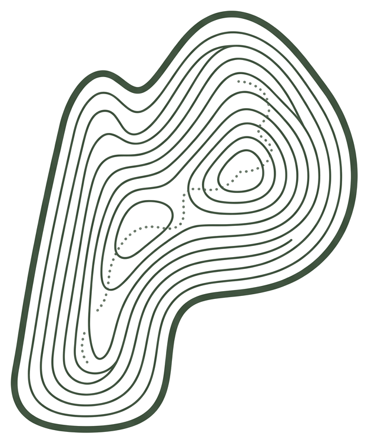

Ghi hành trình GPX · nhận huy hiệu · kết nối cộng đồng trekker. Tài liệu chuẩn hoá logo, màu sắc, kiểu chữ, icon và mockup.
Phiêu lưuNăng lượngTối giản · Bản đồ
00 — Định vị
Mỗi đỉnh núi, một câu chuyện.
Porter là người bạn đồng hành trên mọi cung đường. Chúng tôi biến mỗi hành trình GPX thành một câu chuyện đáng chia sẻ — và kết nối trekker, porter dẫn đường, tour, homestay trong cùng một cộng đồng.
Hình ảnh của Porter mang tính bản đồ: chính xác, tối giản, nhưng luôn tràn năng lượng của người đi rừng. Xanh rừng đậm làm nền, lime bừng sáng như tín hiệu dẫn đường.
01
Chính xác như bản đồ địa hình
02
Tối giản, để dữ liệu tự kể chuyện
03
Tràn năng lượng, cổ vũ mỗi bước chân
04
Cộng đồng ấm áp của người đi rừng
01 — Logo
Dấu hiệu chữ P đường bình độ
Chữ P của Porter được dựng từ các đường bình độ (contour) của bản đồ địa hình — hình ảnh cốt lõi của việc leo núi. Những nét chấm nhỏ gợi lối mòn (trail) len giữa các tầng cao độ.

PRIMARY MARK · PINE
REVERSE · CREAM ON PINE
VÙNG AN TOÀN
Chừa khoảng trống tối thiểu bằng ½ chiều rộng dấu hiệu quanh mọi cạnh.
KÍCH THƯỚC TỐI THIỂU
App · 48px
Favicon · 24px
Không dùng dấu hiệu nhỏ hơn 24px — các đường bình độ sẽ mất nét.
LOCKUP NGANG
Porter
Wordmark dùng Young Display Bold. Căn giữa theo chiều cao dấu hiệu.
KHÔNG ĐƯỢC ✕
Đặt trên gradient rối
Kéo méo tỉ lệ
Lime trên nền sáng (chói)
Xoay nghiêng dấu hiệu
02 — Màu sắc
Sắc độ & phối màu
Xanh rừng đậm là màu thương hiệu chính. Lime là màu năng lượng, chỉ dùng cho tín hiệu & hành động. Tỉ lệ khuyến nghị: 70% pine · 18% trung tính · 8% lime · 4% phụ trợ.
Pine Green
HEX #16281A · Primary
HEX #1F3A22 · Pine 400
Lime Signal
HEX #C9E265 Hành động · Nhấn
Canopy
#2F5233
Ember
#FF5233 · Record
Mist
#A9CDD8 · Info
Cream
#EAF1E4
Char
#0E120E · Ground
THANG SẮC ĐỘ PINE
03 — Kiểu chữ
Hệ thống chữ
Young Typeface cho tiêu đề & hiển thị — cá tính, phiêu lưu. Archivo cho nội dung. Space Mono cho số liệu, toạ độ, nhãn kỹ thuật.
DISPLAY · YOUNG TYPEFACE BOLD
Aa
Mỗi đỉnh núi một câu chuyện
ABCDEFGHIJKLMNOPQRSTUVWXYZ 0123456789 · À Ê Ô Ư Đ
BODY · ARCHIVO
Ghi lại từng bước chân của bạn
Porter theo dõi hành trình GPX của bạn theo thời gian thực, dựng lại biểu đồ độ cao và chia sẻ thành tích với cộng đồng trekker Việt Nam.
Phong cách nét mảnh (outline), grid 24px, stroke 1.6px, bo tròn đầu nét. Đồng bộ với hệ thống UI của app. Dùng màu pine trên nền sáng, cream/lime trên nền tối.
05 — Ngôn ngữ đồ hoạ
Texture, biểu tượng & graphic
Đường bình độ (contour) là chất liệu cốt lõi — dùng làm texture nền, khung và các mảng đồ hoạ phụ trợ, kết hợp cùng biểu tượng chữ P và bộ phần tử bản đồ.
TEXTURE CONTOUR
Lime trên Pine · thưa
Cream contour · dày
Lưới toạ độ · Mist
ÁP DỤNG LÀM NỀN
Mỗi đỉnh núi, một câu chuyện.
PHƯƠNG ÁN BIỂU TƯỢNG
Dấu hiệu chính
Emblem tròn
App icon
Biểu tượng phụ · Đỉnh
P
Monogram
PHẦN TỬ ĐỒ HOẠ
Lối mòn
Waypoint
Vạch đích
22°18′N
Toạ độ
Đường đồng tâm
Biểu đồ cao độ
06 — Hệ thống UI
Thành phần giao diện
Nền tối (#0E120E), thẻ #16281A, bo góc lớn (15–26px). Lime cho nút chính & trạng thái đang hoạt động; ember cho ghi hình.
NÚT
Bắt đầu hành trình →
Đang ghi · Dừng
Nút phụ (ghost)
CHIP · TAG · TRẠNG THÁI
FansipanTà XùaLảo ThẩnRECCamp 2.800m
APP ICON · 3D
Dấu hiệu lime nổi khối trên nền pine dốc sáng, bo góc 22%, hiệu ứng gloss & đổ bóng sâu. Xuất phẳng cho store, giữ chiều sâu cho quảng bá.
180 · 120 · 60px
Fansipan
Nóc nhà Đông Dương · 3.143m
11.2 km+1580 m6:42
›
07 — Huy hiệu
Huy hiệu topography
Huy hiệu phẳng, phong cách bản đồ đường bình độ (topography): viền kem, ruột contour pine. Bốn hình khối phân loại thành tích, ba cấp Đồng · Bạc · Vàng theo màu viền.
Chinh phục
VÀNG · KHIÊN
100KM
Cột mốc
BẠC · NGŨ GIÁC
Đỉnh núi
ĐỒNG · LỤC GIÁC
Thành tựu
VÀNG · KIM CƯƠNG
CẤP BẬC
Đồng
Bạc
Vàng
Nâng cấp theo số lần lặp lại & độ khó cung đường.
Ý NGHĨA HÌNH KHỐI
Khiên — hoàn thành chuyến an toàn
Ngũ giác — cột mốc quãng đường tích luỹ
Lục giác — chinh phục một đỉnh núi
Kim cương — thành tựu đặc biệt / hiếm
08 — Mockup chia sẻ
Thẻ chụp ảnh kiểu Strava
Ảnh thật làm nền toàn màn hình dọc (9:16). Lộ trình vẽ trên nền đường đồng tâm (contour) gợi bản đồ 3D, số liệu overlay bằng Young Display + Space Mono. Kéo-thả ảnh của bạn vào từng thẻ.